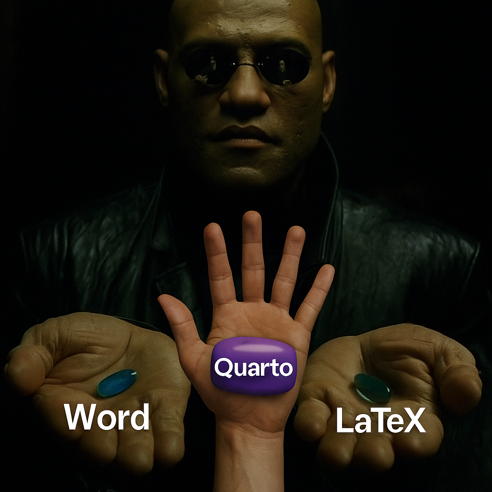

5 Conozcamos Quarto
5.1 Una tesis de LIER
5.2 Una tesis de Maestría
5.3 Una tesis de Doctorado
5.4 Material suplementario de un paper
6 Escritura científica con Quarto
6.1 Simplicidad y aprendizaje
- Usa Markdown, más simple y legible que LaTeX
- Menos sintaxis técnica (
**negritas**vs\textbf{})
- Ideal para quienes vienen de Word o Jupyter
- Menor curva de aprendizaje
- Evita comandos crípticos y estructuras repetitivas
Quarto es accesible desde el primer día
6.2 Mantenimiento y productividad
- Menos archivos auxiliares
- Evita errores por sintaxis estricta
- Configuración clara con YAML
- Sin peleas con paquetes
Produce más, pelea menos
6.3 Código y reproducibilidad
- Integra código R, Python, Julia, Observable JS
- Ejecuta y muestra resultados automáticamente
- Unifica texto, visualización y análisis en un solo archivo
- Oculta o muestra código según el público
- Documentos 100% reproducibles
Ciencia sin copiar/pegar resultados
6.4 Salidas múltiples
- De un
.qmdpuedes generar:- PDF (con LaTeX)
- Word
- HTML
- Presentaciones
- Libros y sitios
- PDF (con LaTeX)
- No hay que reescribir nada para cambiar de formato
Escribe una vez, publica en todas partes
6.5 Multimedia y diseño moderno
- Imágenes escalables automáticamente
- Soporte para videos, GIFs, y visuales interactivos
- Integra gráficos en vivo: Plotly, Leaflet, Vega
- Presentaciones Revealjs responsivas y limpias
Visualiza como un profesional sin tocar CSS
6.6 Automatización y reproducibilidad
- Se integra con Git, Make, Snakemake
- Entornos controlados:
conda,uv, Docker
- Parámetros dinámicos: genera versiones múltiples de un documento
- Reproducibilidad real, no promesas
La ciencia buena también se puede repetir
6.7 Colaboración y docencia
- Archivos
.qmdfáciles de leer y compartir
- Ideal para tareas, notebooks, reportes y tutoriales
- Compatible con GitHub y plataformas educativas
- Perfecto para enseñanza reproducible y abierta
- Narrativa computacional
Comparte ciencia, no solo PDFs
6.8 Referencias y bibliografía
- Citas automáticas con BibTeX, CSL, Zotero
- Estilos intercambiables (APA, IEEE, Nature, etc.)
- Generación automática de bibliografía
- Notas al pie, DOI, enlaces: todo controlado
Bibliografía bien hecha, sin dolor
6.9 Otros beneficios prácticos
- Documentación moderna y clara (quarto.org)
- Comunidad activa y libre
- Compatible con Jupyter, VS Code y RStudio
- Todo es FOSS
- No necesitas saber LaTeX (aunque puedes usarlo si quieres)
Quarto te acompaña en todo el ciclo científico
6.10 En resumen…
- LaTeX fue genial.
- Pero Quarto es:
- Más fácil
- Más moderno
- Más reproducible
- Más versátil
- Más fácil
Escribe código, escribe texto, genera ciencia.
Bienvenido a la era del .qmd
6.11 La decisión es tuya

You take the blue pill, the story ends. You wake up in your bed and believe whatever you want to believe. You take the purple pill, you stay in Wonderland, and I show you how deep the rabbit hole goes.”
6.12
Tomas la pastilla Word:
Sigues formateando a mano cada figura,
luchas con estilos y guardas 12 versiones del mismo archivo.
Tomas la pastilla Quarto:
Escribes en Markdown,
integras código y datos,
y descubres lo que es una vida científica reproducible.